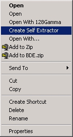

Self-Extracting Executables are actual programs that contain encrypted
data that can be extracted securely.
To create Self-Extracting Executables simply right click on any file encrypted
by 128Gamma and Select "Create Self Extractor" from the context
menu. 128Gamma will then pack all the data into an executable program that
will decrypt all its contained data upon entering the correct password.
To decrypt Self-Extracting Executables, Simply open it (By hitting enter or double clicking on its icon). It will prompt you for the correct password. Enter a password and click ok.
- Windows Context Menu -

Above is the windows context menu, It contains common commands & shortcuts. It pops up when you right click on a 128Gamma Encrypted File.
NOTE: Your context menu may slightly differ from the above image.